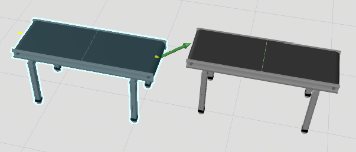

Подключение компонентов |
|
Команда PnP позволяет подключать компоненты друг к другу через физические интерфейсы. При выборе компонента: ·Доступные физические интерфейсы отмечены стрелками, выделенными желтым цветом, и расположены на элементах Система координат (СК) в компоненте. ·Подключенные физические интерфейсы отмечены зелеными стрелками и расположены на других компонентах или рядом с ними.
Доступные физические интерфейсы в компоненте помогут вам найти соответствующие интерфейсы при перетаскивании компонента рядом с другими компонентами. Например, зеленые стрелки будут указывать от доступного интерфейса к любым соседним совпадающим интерфейсам. Если есть два или более совпадающих интерфейса, самая большая зеленая стрелка будет указывать на ближайшее доступное соединение. Когда соответствующие интерфейсы перемещаются достаточно близко друг к другу, компоненты соединяются и образуют физическое соединение.  1.На Главной вкладке, в группе Действия нажмите PnP. 2.В трехмерном мире укажите на компонент, который вы хотите подключить к другим компонентам. 3.Перетащите компонент рядом с другими компонентами, пока одна или несколько зеленых стрелок не укажут от компонента на расположение рядом стоящих компонентов. ·Если вам нужно повернуть компонент на месте, выберите компонент, а затем перетащите манипулятор по часовой стрелке или против часовой стрелки. Как правило, вам нужно повернуть компонент, чтобы его интерфейсы находились в пределах приемлемого угла подхода к соответствующим интерфейсам. 4.Продолжайте перетаскивать компонент в направлении одной из зеленых стрелок, пока компонент не привяжется к другому компоненту. 5.Если вам нужно отключить компонент, перетащите его в сторону от компонента.
|